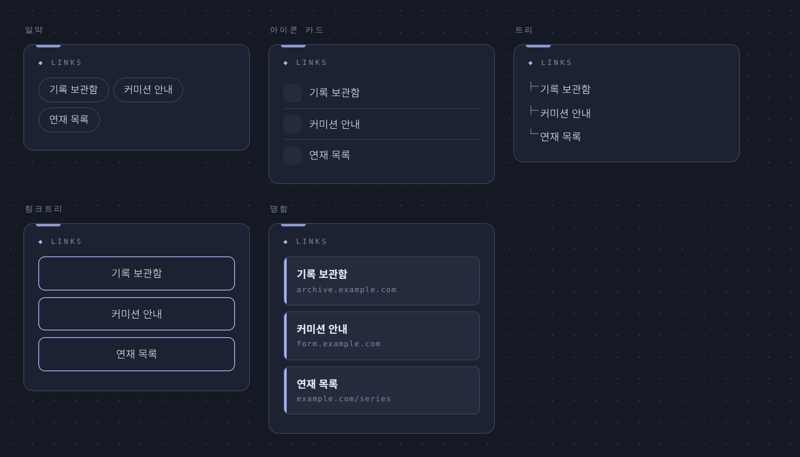
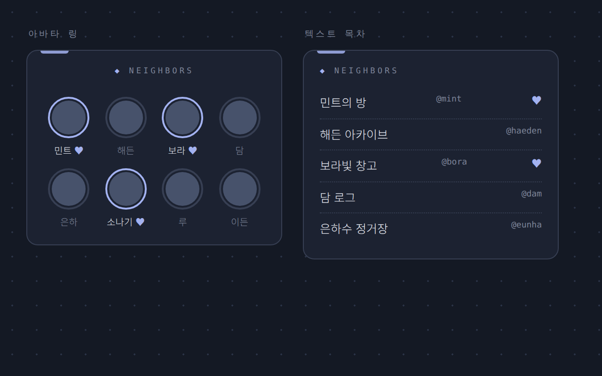

러브로그 · 위젯
연결·상호작용 위젯
- 프로필 · 검색 · 카테고리 — 기본 3종. 검색은 제목·본문·태그를 함께 찾습니다(비밀글 본문 제외). 검색 모양 5종(기본·밑줄·터미널·라벨지·캡슐). 카테고리는 모양 8종(기본·알약·네모·글씨만·탭 폴더·브래킷·점 구분·세로 목차), 선택 표시(기본/연하게/없음), 글 수 표시 온오프.
- 링크 — 바깥으로 나가는 목록. 스킨 알약·아이콘 카드·트리·링크트리·명함(왼쪽 색 띠 + 아래 주소 한 줄).
- 배너칸 — 이미지 배너 목록. [＋ 러브로그 홈 걸기]로 핸들만 적으면 그 홈이 배너로 걸립니다. 보여줄 개수(높이)를 정할 수 있고 넘치면 스크롤.
- 이웃 홈 — 다른 러브로그 주소를 적으면 이름·헤더 사진이 자동으로 뜨는 목록. 바깥 주소도 https://+이름으로 같이. 스킨 아바타 링(한 줄 3~6·동그라미/둥근 네모, 서로 이웃은 포인트색 링)·텍스트 목차.
- 방문자수 — TODAY/TOTAL 카운터(하나만). 스킨 계기판·스탬프·터미널.
- 발도장 — 방문자가 하루에 하나씩 도장을 찍고 갑니다. 도장 이모지 1~4개, 안내 문구 변경·끄기.

사진 자리img/ll-w-links.png
사진 자리img/ll-w-neighbors.png